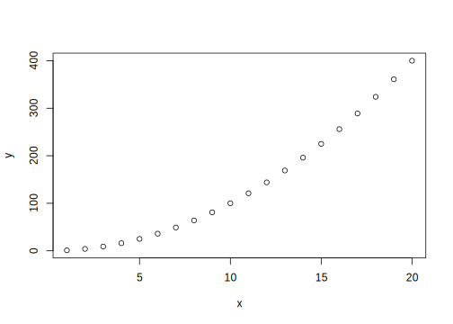
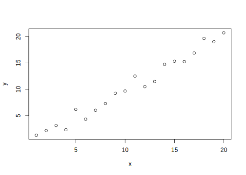
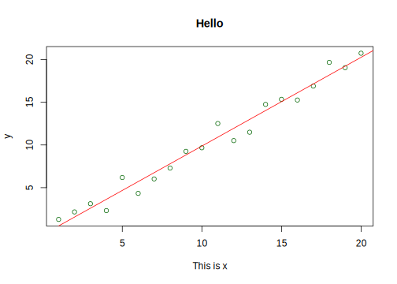
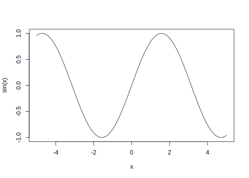
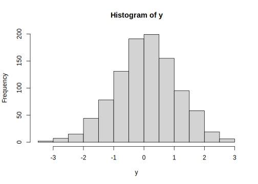
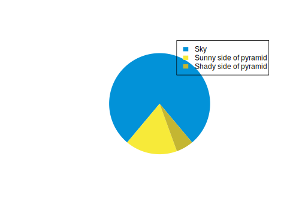

Day 1 And Go!
1.1 Basic Datastructures in R
Because R is a programming language, we first look into some basic concepts and data structures before diving into the fun part.
To test out everything we will learn today yourself, open RStudio, find the top left corner and click the little document with a plus icon. From the menu select “R Script”1.
This chapter will jump into the basic concepts of the R
programming language and is inspired by
learnXinYminutes.
It is completely normal that some of the concepts covered
in this section will not appear obvious at first. Programming
languages are not unlike human languages and the computer
will not always understand what you want it to do unless you
use exactly the right grammar and vocabulary. However, R will
sometimes tell you, that it didn’t understand you through
error messages and it is quite the norm to see them a lot.
Even experienced programmers are very fond of this advice:

Figure 1.1: Maybe the most important programming advice.
1.1.1 Executing Code in R
The simplest use-case for any programming language is probably just to use it as a calculator (because that’s what computers are, big calculators). Type the following line in your R script and then hit Ctrl+Enter to send it to the R console. This is where your code gets executed.
1 + 1## [1] 2You can also type directly in the console and then hit enter to execute, but in order to keep everything reproducible, we write everything in the R script file so that we can come back later and execute the same code to proof that it still works and that for example our data analysis for an experiment is valid.
Your code can have comments to tell your future self why you wrote
a piece of code the way you did. Any line starting with
the number symbol # will be ignored by R.
# This line will be ignored
43 - 1 # as will be the part after this #, but not before it## [1] 421.1.2 Basic Datatypes
Whole numbers (integer)
1L # denoted by LNumbers (numeric, double)
12
12.5Complex numbers
1 + 3i # denoted by the small i for the imaginary partText (character, string)
"Harry Potter"Logical values (boolean, logical)
TRUE
FALSESpecial types that mix with any other type:
# NULL for no value
NULL
# NA for Not Assigned
NANA is contagious. Any computation involving NA will return NA
(because R has no way of knowing the answer):
NA + 1## [1] NAmax(NA, 12, 1)## [1] NAFactors (factor) for categorical data.
# Factors can be ordered (like grade levels) or unordered (like gender)
factor(c("m", "f", "f", "d", "m"))## [1] m f f d m
## Levels: d f m1.1.3 Variables
Variables store data. You can think of them as a box with a name in which
you can put stuff. Putting stuff in boxes works via “assignment” and the
operator in R for that looks like this: <-. You can either type it
directly or use the handy RStudio shortcut Alt+Minus to insert one into
your code.
name <- "Kvothe"
x <- 12
y <- 14Executing the above code will not give you any output, but when you use the name of the variable, you can see its content:
x## [1] 12name## [1] "Kvothe"And you can do operations with those variables:
x + y## [1] 26NOTE Be careful about the order of execution! R enables you to work interactively and to execute the code you write in your script in any order with Ctrl+Enter, but when you execute (source) the whole script, it will be executed from top to bottom.
Furthermore, code is not executed again automatically, if you change some dependency of the expression later on. So the second assignment to x doesn’t change y.
x <- 1
y <- x + 1
x <- 1000
y## [1] 2Variable names can contain letters (capitalization matters),
numbers (but not as the first character) and underscores _.2
# snake_case
main_character_name <- "Kvothe"
# or camelCase
bookTitle <- "The Name of the Wind"
# you can have numbers in the name
x1 <- 12
x2 <- 13
# There are other ways to assign variables
x3 = 12 # this can be confused with setting parameters in function calls
13 -> x4Typing and executing the name of a variable will implicitly
call the print function on it, which displays its
content in the console.
bookTitle # == print(mainCharacterName)1.1.4 Math Operators
An operator is a function that is called inline, so it stands
between its arguments, like +. R can do standard math and much more.
x1 + x2
12 - 13
13 * 12
10 / 5
12 %/% 5 # integer division
12 %% 5 # modulo (the rest of integer division)
# NaN, Not a Number
0 / 0
10 / 0
Inf
-Inf1.1.5 Functions and Vectors
Functions are the main workhorses of our data analysis.
There are mathematical functions, like sin, cos etc.
sin(x = 0)## [1] 0The sin function takes just one argument x and returns its sine.
Note, that the = inside the function parenthesis
gives x = 0 to the function and has nothing to do with
any x defined outside of the function.
The parameter x used in the function is separate from
any x you might have defined outside of the function. E.g.
x <- 10
# The sin function uses an x = 0
sin(x = 0)## [1] 0# But the other x is still 10!
x## [1] 10If you want to know more about a function in R, execute ? with the function
name or press F1 with your mouse over the function.
?sinThis is important {.note}
We can pass arguments by name, or by order of appearance. This allows us to simplify the previous expression.
sin(x = 12)## [1] -0.5365729sin(12)## [1] -0.5365729The basic datatypes in R are all vectors, which means they can
contain more than one entry. You can create a vector
by combining things of the same data type with the function c
for combine.
x <- c(1,2,3,4,5,6)
x## [1] 1 2 3 4 5 6The basic mathematical operations in R are vectorized by default i.e. they are performed on every element of the vector. Here, every element is multiplied by 2 and the result printed to the console.
x * 2## [1] 2 4 6 8 10 12The original vector x was not changed in doing so.
x## [1] 1 2 3 4 5 6But we could have by assigning the result back to x, thus overwriting
its previous content. The right hand side (RHS) is executed first:
x <- x * 2Now x changed:
x## [1] 2 4 6 8 10 12This line performs vector addition:
c(1,2,3) + c(4,5,6)## [1] 5 7 9The : operator and seq allow us to create vectors
of numbers quite easily:
x <- 1:10
x## [1] 1 2 3 4 5 6 7 8 9 10evenNumbers <- seq(from = 0, to = 10, by = 2)
evenNumbers## [1] 0 2 4 6 8 10logical comparisons are vectorized as well return logical (boolean) vectors
12 < 13## [1] TRUEanswer <- 12 > 13
answer## [1] FALSEMost things can be compared
main_character_name == "Kvothe" # TRUE## [1] TRUEmain_character_name == bookTitle # FALSE## [1] FALSE1 == 1 # TRUE## [1] TRUE! means not.
1 != 2## [1] TRUEThere is logical and and or:
# "and" => both need to be TRUE to get TRUE
TRUE & FALSE## [1] FALSE# "or" => only one needs to be TRUE
TRUE | FALSE | FALSE## [1] TRUETRUE | TRUE## [1] TRUEThey also work element-wise.
a <- c(TRUE, FALSE, TRUE)
b <- c(FALSE, FALSE, TRUE)
a | b## [1] TRUE FALSE TRUEPeriodic reminder: error messages are your friends and completely normal.
This error for example tells you that R expected another argument
to the c function because you added another comma:
c(1,2,)## Error in c(1, 2, ): argument 3 is emptyThere are errors, messages and warnings. Your code will not run to the end if R finds errors, but warnings and messages are Rs way of telling you, that your code ran but you might want to double-check if it is doing what you expected it to be doing.
warning("Warnings are often fine!")## Warning: Warnings are often fine!message("I am a message")## I am a messageCombining different datatypes into a vector with the c function
will coerce them into the same type, choosing the
one that allows the most operations. It can also be done
explicitly.
# implicit
paste("hello", "world", 13)## [1] "hello world 13"# explicit
as.character(13)## [1] "13"1.1.5.1 Writing Functions
Everything that does something is a function, everything that exists is an object.
We can write our own functions (like sin)
greet <- function(name) {
# The variable "text" only exists
# in the context of this function.
# It is not visible to the outside world.
text <- paste("Hello ", name, "!", sep = "")
return(text)
}Here, I am assigning return value of the function
to the variable result and then look at the
content of result
result <- greet("Jannik")result## [1] "Hello Jannik!"addOne <- function(x) {
return(x + 1)
}If your function fits on one line, you can leave out the curly braces {}.
addOne <- function(x) x + 1If you don’t explicitly use the return() statement inside
of the function definition, the function
will return the last evaluated line, which is why
both versions of addOne above are valid R code and do the same thing.
We use a function by calling it with the required arguments / parameters:
addOne(x = 1)## [1] 2Instead of explicitly stating the parameters with their names when calling the function, we can also rely on the order in which a function is expecting the arguments:
addOne(1) # the same as addOne(x = 1)## [1] 21.1.6 Datastructures
1.1.6.1 1D, same datatype: vector
x <- c("harry", "ron", "hermione")
x## [1] "harry" "ron" "hermione"Getting specific elements of a vector (or other data structure) is called subsetting:
# We ask for specific elements by subsetting with square brackets []
# (Note that R starts counting from 1)
x[3]## [1] "hermione"x[1:2]## [1] "harry" "ron"# subsetting with logical vector
logicalVector <- c(TRUE, FALSE, TRUE)
## the next 3 statements do the same thing
x[logicalVector]## [1] "harry" "hermione"# or with indices
x[c(1,3)]## [1] "harry" "hermione"# which
x[which(logicalVector)]## [1] "harry" "hermione"There is a number of useful functions for vectors like:
x <- 1:100
# grab just the first or last few entries in the vector,
head(x)## [1] 1 2 3 4 5 6tail(x)## [1] 95 96 97 98 99 100# or figure out if a certain value is in the vector
any(x == 2)## [1] TRUEwhich(x == 2)## [1] 2x[which(x == 2)]## [1] 2# If an index "goes over" you'll get NA:
x[101]## [1] NA# You can find the length of your vector with length()
length(x)## [1] 100# You can perform operations on entire vectors or subsets of vectors
# [] for subsetting, get a piece of a vector (or list, or anything else)
# () for order of application and more importantly
# for calling functions
result <- greet("jannik")
x[x %% 2 == 0]## [1] 2 4 6 8 10 12 14 16 18 20 22 24 26 28 30 32 34 36 38
## [20] 40 42 44 46 48 50 52 54 56 58 60 62 64 66 68 70 72 74 76
## [39] 78 80 82 84 86 88 90 92 94 96 98 100# and R has many built-in functions to summarize vectors
# mean, min, max, sum
mean(x)## [1] 50.5min(x)## [1] 1max(x)## [1] 100sum(x)## [1] 5050c(1,2,3, "harry", TRUE)## [1] "1" "2" "3" "harry" "TRUE"c(1, 2, 3, TRUE)## [1] 1 2 3 1mean(x %% 2 == 0)## [1] 0.51.1.6.2 1D, different datatypes: list
Lists
# create list
l1 <- list(1, "harry", TRUE, c(1,2,3) )
# single [] subsetting
l1[1]## [[1]]
## [1] 1l1[1:2]## [[1]]
## [1] 1
##
## [[2]]
## [1] "harry"# double [[]] subsetting
l1[[1]]## [1] 1# lists and vectors can have names
names(l1) <- c("number", "potter", "bool", "vec")
l1## $number
## [1] 1
##
## $potter
## [1] "harry"
##
## $bool
## [1] TRUE
##
## $vec
## [1] 1 2 3# using the names for subsetting
l1$number # same as l1[[1]]## [1] 1l1[["number"]]## [1] 1l1["number"]## $number
## [1] 11.1.6.3 2D, same Datentyp: matrix
# matrix
# matrix(1:9)
# matrix(1:9, nrow = 3, byrow = TRUE)
m <- matrix(1:9, nrow = 3)
# Ask for the first row
m[1, ]## [1] 1 4 7# the first column
m[, 1]## [1] 1 2 3# the element in the top right corner
m[1,3]## [1] 7# Perform operation on the first column
m[,1] * 2## [1] 2 4 6m[,1] <- m[,1] * 2
m## [,1] [,2] [,3]
## [1,] 2 4 7
## [2,] 4 5 8
## [3,] 6 6 9# Transpose the whole matrix
t(m)## [,1] [,2] [,3]
## [1,] 2 4 6
## [2,] 4 5 6
## [3,] 7 8 9# Matrix multiplication
m %*% m## [,1] [,2] [,3]
## [1,] 62 70 109
## [2,] 76 89 140
## [3,] 90 108 171m <- m * 2
# cbind() sticks vectors together column-wise to make a matrix
cbind(
1:3,
c(1,2,42)
)## [,1] [,2]
## [1,] 1 1
## [2,] 2 2
## [3,] 3 42m## [,1] [,2] [,3]
## [1,] 4 8 14
## [2,] 8 10 16
## [3,] 12 12 18# rbind() sticks vectors together row-wise to make a matrix
rbind(
1:3,
c(1,2,42)
)## [,1] [,2] [,3]
## [1,] 1 2 3
## [2,] 1 2 421.1.6.4 2D, different datatypes: data.frame
# data.frame
students <- data.frame(
name = c("harry", "ron", "cedric"),
year = c(2, 2, 3),
alive = c(TRUE, TRUE, FALSE), stringsAsFactors = FALSE
)
students## # A tibble: 3 x 3
## name year alive
## <chr> <dbl> <lgl>
## 1 harry 2 TRUE
## 2 ron 2 TRUE
## 3 cedric 3 FALSEUseful functions for dataframes
# nrow, ncol, dim
nrow(students)## [1] 3ncol(students)## [1] 3dim(students)## [1] 3 3# parameter stringsAsFactors
# There are many ways to subset data frames
# See if you can find out what each of these lines does
# dollar
students$name## [1] "harry" "ron" "cedric"# vector
students[1:2]## # A tibble: 3 x 2
## name year
## <chr> <dbl>
## 1 harry 2
## 2 ron 2
## 3 cedric 3students[1, 1]## [1] "harry"# character
students["name"]## # A tibble: 3 x 1
## name
## <chr>
## 1 harry
## 2 ron
## 3 cedricstudents$year <- students$year + 3
students## # A tibble: 3 x 3
## name year alive
## <chr> <dbl> <lgl>
## 1 harry 5 TRUE
## 2 ron 5 TRUE
## 3 cedric 6 FALSEstudents <- cbind(students, stuff = c(1,2,3))
students[students$name == "cedric", "year"] <- 8
students[students$alive, ]## # A tibble: 2 x 4
## name year alive stuff
## <chr> <dbl> <lgl> <dbl>
## 1 harry 5 TRUE 1
## 2 ron 5 TRUE 2Almost as useful as ?: the function str for structure.
str(students)## 'data.frame': 3 obs. of 4 variables:
## $ name : chr "harry" "ron" "cedric"
## $ year : num 5 5 8
## $ alive: logi TRUE TRUE FALSE
## $ stuff: num 1 2 31.2 The first Plots
1.2.1 Scatterplot
x <- 1:20
y <- x^2
plot(x, y)
x <- 1:20
y <- x + rnorm(length(x))
plot(x,y)
With a linear regression
# model lm
model <- lm(y ~ x)
# plot
plot(x,y, xlab = "This is x", main ="Hello", col = "darkgreen")
# abline
abline(model, col = "red")
1.2.2 Curve
curve(sin, -5, 5)
1.2.3 Histogram
y <- rnorm(1000)
hist(y)
1.2.4 The last piechart you will ever need.
cols <- c('#0292D8', '#F7EA39', '#C4B632')
pie(
c(280, 60, 20),
init.angle = -50,
col = cols,
border = NA, labels = NA
)
legend(1, 1,
xjust = 0.5,
yjust = 1,
fill = cols,
border = NA,
legend = c('Sky', 'Sunny side of pyramid', 'Shady side of pyramid')
)
1.2.5 Saving Plots
By executing a piece of code that contains a plot,
the plot is send to a so called graphics device.
Think of it as a printer for your plots. By default
this is the plot pane of RStudio (lower right).
If you want to save your base-R plot to a file,
you first open a different graphics device that redirects
your plot for example to a png-file, then run the plot code
and then close the device to finalize the printing step.
png(filename = "myFirstPlot.png")
curve(sin, -5, 5, main = "So much sin!")
dev.off()